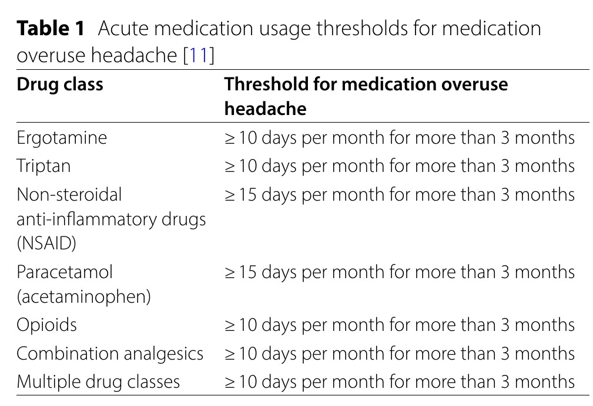

Q1. Enxaqueca 12 crises/mês + triptano ~12 dias/mês, piorando. Diagnóstico:
Erro comum desmontado
Dois diagnósticos — corta o remédio
Não é “só enxaqueca piorando” — pode ser abuso em cima da primária.
Fecho do caso
Retorno: cefaleia primária forte latejante com náusea/vômito, precedida por dormência, HF menstrual materna = enxaqueca/migrânea.
Abuso depende de primária
Antes de fechar, uma secundária “diferentona”: cefaleia por abuso de medicamento (rebote / vários nomes). Para surgir, depende de uma primária prévia. Quase sempre sobre enxaqueca (mais) ou tensional; salva é menos comum porque a profilaxia já começa cedo.
10–15 d/mês = 2 diagnósticos
Padrão: primária com vários episódios/mês + analgésico/triptano a cada crise. Uso clássico a partir de cerca de 10–15 dias no mês → segundo diagnóstico. Passam a coexistir dois diagnósticos.
Bola de neve
Crises mais frequentes e às vezes mais graves. Mecanismo provável: uso excessivo sensibiliza vias de dor. Analogia: “viciado em remédio” (não ilícito). Narrativa: 10 → 15 → 20 episódios/mês. Relato: dipirona 3–4×/semana → alergia forçou parada → frequência despencou = abuso clássico.
Conduta
- Suspender a medicação causadora (analgésico ou triptano abusado) — pode doer um pouco na retirada.
- Se precisar de SOS, preferir classe diferente da abusada (abusava dipirona → SOS triptano; abusava triptano → SOS analgésico de outra classe).
- Reavaliar profilaxia da primária — muitas vezes o abuso nasceu de primária mal controlada.
Próximo foco clínico
Após fechar primárias + abuso, permanecem as secundárias graves, que exigem investigação e conduta próprias.
Bordão
Dois diagnósticos — corta o remédio que criou o segundo.

Gosalia H et al. J Headache Pain. 2024;25:89 — CC BY 4.0 · DOI 10.1186/s10194-024-01755-w · fonte
O limiar que abre o segundo diagnóstico
Tabela mostra o duplo limiar: 10 d/mês para triptano/opioide/combinação; 15 d/mês para analgésico simples ou AINE. Acima disso, abre-se o segundo diagnóstico.
Quiz
Q2. Conduta nuclear no abuso de medicamento:
Q3. (Interleaving) Paciente obesa com enxaqueca que agora abusa de AINE 20 d/mês. Além de suspender o abuso, profilático oral que casa com a comorbidade: